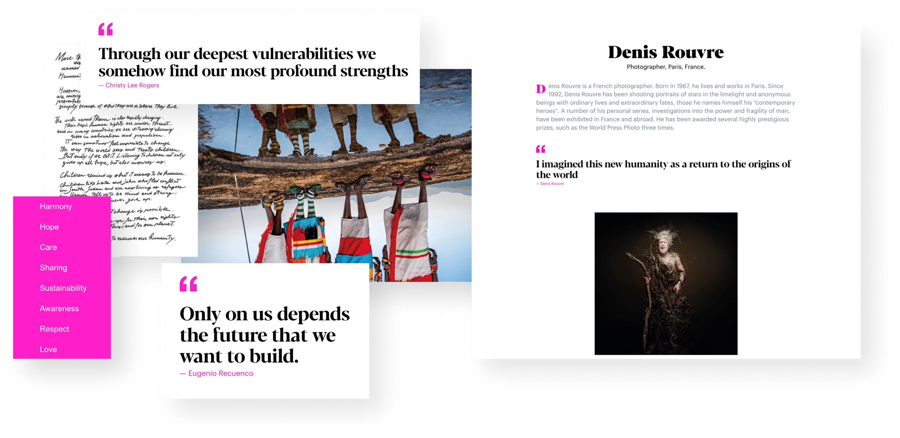
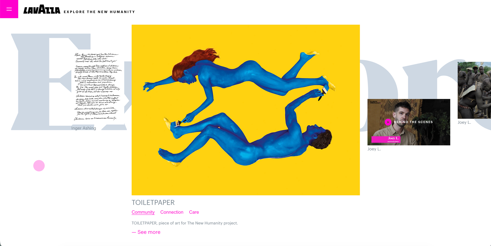

Information architecture
A semantic structure for a large and varied set of artistic contributions.
ARCHIVE 04 · Armando Testa × Lavazza · 2020
Turning a physical calendar and hundreds of artistic contributions into a digital exploration experience during lockdown.
Lavazza’s New Humanity project gathered artistic contributions about the human experience during the pandemic. The challenge was to translate a paper calendar and a large, diverse body of work into a digital experience that still felt emotional and exploratory.
A semantic structure for a large and varied set of artistic contributions.
Sequential calendar navigation paired with thematic free discovery.
Reusable content atoms and modules designed to simplify ongoing development.



A visually expressive experience still needed rigorous architecture underneath it. Structure was what made the creative concept maintainable.